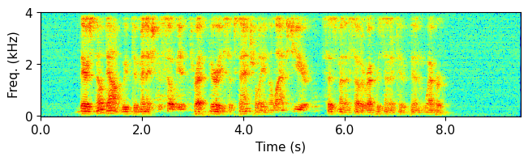
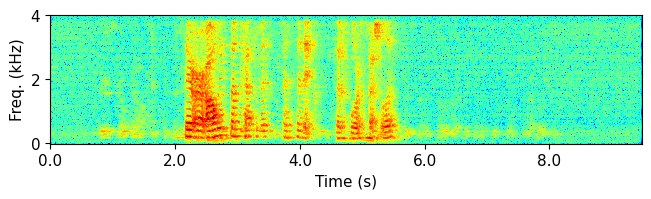
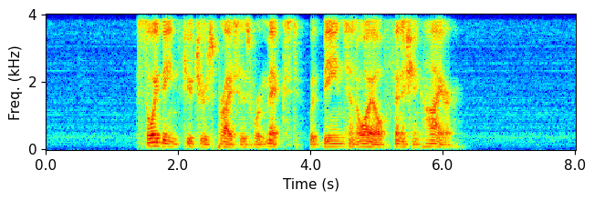
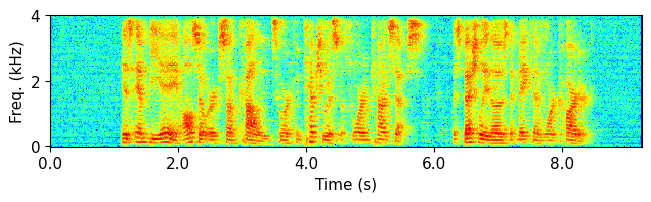
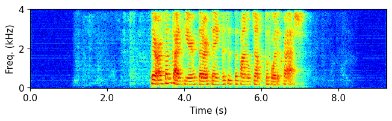

This webpage provides a sound demo based on the test set of the SMS-WSJ-FF-CT corpus. For technical details, please refer to the following paper:
Z.-Q. Wang, "Mixture to Mixture: Leveraging Close-talk Mixtures as Weak-supervision for Speech Separation", in arXiv preprint arXiv:2402.09313, 2024.
| Utterance ID: 1046_440c0414_444c040n | Spk 1 | Log Mag. of Spk 1 | Spk 2 | Log Mag. of Spk 2 | SDR (dB) of Spk 1 | SDR (dB) of Spk 2 | |
| Far-Field Mixture (row 0) | 0.7 | -0.6 | |||||
| M2M (row 1a) | 15.3 | 15.0 | |||||
| UNSSOR (row 4a) |  |  | 11.6 | 11.2 | |||
| PIT (row 4b) | 16.9 | 17.0 | |||||
| Far-Field Clean Speaker Image | - | - | |||||
| Close-Talk Mixture | 3.8 (ref: close-talk speech) | 6.9 (ref: close-talk speech) | |||||
| Close-Talk Clean Speaker Image | - | - | |||||
| Utterance ID: 1257_441c0412_442c040j | Spk 1 | Log Mag. of Spk 1 | Spk 2 | Log Mag. of Spk 2 | SDR (dB) of Spk 1 | SDR (dB) of Spk 2 | |
| Far-Field Mixture (row 0) | 2.0 | -2.0 | |||||
| M2M (row 1a) | 20.0 | 18.5 | |||||
| UNSSOR (row 4a) | 18.3 | 17.0 | |||||
| PIT (row 4b) | 20.6 | 19.1 | |||||
| Far-Field Clean Speaker Image | - | - | |||||
| Close-Talk Mixture | 15.0 (ref: close-talk speech) | 7.8 (ref: close-talk speech) | |||||
| Close-Talk Clean Speaker Image | - | - | |||||
| Utterance ID: 279_445c040l_444c0408 | Spk 1 | Log Mag. of Spk 1 | Spk 2 | Log Mag. of Spk 2 | SDR (dB) of Spk 1 | SDR (dB) of Spk 2 | |
| Far-Field Mixture (row 0) | 0.1 | 0.0 | |||||
| M2M (row 1a) | 23.3 | 23.1 | |||||
| UNSSOR (row 4a) | 19.7 | 20.1 | |||||
| PIT (row 4b) | |
26.1 | 25.3 | ||||
| Far-Field Clean Speaker Image | - | - | |||||
| Close-Talk Mixture | 18.1 (ref: close-talk speech) | 19.6 (ref: close-talk speech) | |||||
| Close-Talk Clean Speaker Image | - | - | |||||
| Utterance ID: 442_440c040i_442c0405 | Spk 1 | Log Mag. of Spk 1 | Spk 2 | Log Mag. of Spk 2 | SDR (dB) of Spk 1 | SDR (dB) of Spk 2 | |
| Far-Field Mixture (row 0) | -1.5 | 1.4 | |||||
| M2M (row 1a) | 19.6 | 20.8 | |||||
| UNSSOR (row 4a) | 15.9 | 18.3 | |||||
| PIT (row 4b) | 21.4 | 22.1 | |||||
| Far-Field Clean Speaker Image | - | - | |||||
| Close-Talk Mixture | 18.9 (ref: close-talk speech) | 17.4 (ref: close-talk speech) | |||||
| Close-Talk Clean Speaker Image | - | - | |||||
| Utterance ID: 315_447c0404_442c040o | Spk 1 | Log Mag. of Spk 1 | Spk 2 | Log Mag. of Spk 2 | SDR (dB) of Spk 1 | SDR (dB) of Spk 2 | |
| Far-Field Mixture (row 0) | -0.4 | 0.3 | |||||
| M2M (row 1a) | 23.7 | 22.6 | |||||
| UNSSOR (row 4a) | 20.5 | 20.0 | |||||
| PIT (row 4b) | 26.3 | 24.4 | |||||
| Far-Field Clean Speaker Image | - | - | |||||
| Close-Talk Mixture | 17.7 (ref: close-talk speech) | 24.3 (ref: close-talk speech) | |||||
| Close-Talk Clean Speaker Image | - | - | |||||
| Utterance ID: 158_440c040e_442c040k | Spk 1 | Log Mag. of Spk 1 | Spk 2 | Log Mag. of Spk 2 | SDR (dB) of Spk 1 | SDR (dB) of Spk 2 | |
| Far-Field Mixture (row 0) | 0.5 | -0.5 | |||||
| M2M (row 1a) | 20.1 | 19.6 | |||||
| UNSSOR (row 4a) | 18.1 | 17.4 | |||||
| PIT (row 4b) | 21.5 | 21.1 | |||||
| Far-Field Clean Speaker Image |  | - | - | ||||
| Close-Talk Mixture | 19.9 (ref: close-talk speech) | 24.1 (ref: close-talk speech) | |||||
| Close-Talk Clean Speaker Image | |
- | - | ||||
| Utterance ID: 39_443c040s_444c040o | Spk 1 | Log Mag. of Spk 1 | Spk 2 | Log Mag. of Spk 2 | SDR (dB) of Spk 1 | SDR (dB) of Spk 2 | |
| Far-Field Mixture (row 0) | 0.2 | -0.0 | |||||
| M2M (row 1a) |  | 18.0 | 18.0 | ||||
| UNSSOR (row 4a) | 16.6 | 16.6 | |||||
| PIT (row 4b) |  | 18.8 | 19.1 | ||||
| Far-Field Clean Speaker Image | - | - | |||||
| Close-Talk Mixture | 19.9 (ref: close-talk speech) | 13.1 (ref: close-talk speech) | |||||
| Close-Talk Clean Speaker Image | |
- | - | ||||
| Utterance ID: 281_447c040c_445c0402 | Spk 1 | Log Mag. of Spk 1 | Spk 2 | Log Mag. of Spk 2 | SDR (dB) of Spk 1 | SDR (dB) of Spk 2 | |
| Far-Field Mixture (row 0) | -0.5 | 0.4 | |||||
| M2M (row 1a) | 13.6 | 14.2 | |||||
| UNSSOR (row 4a) | 10.2 | 9.5 | |||||
| PIT (row 4b) | 15.4 | 15.9 | |||||
| Far-Field Clean Speaker Image | - | - | |||||
| Close-Talk Mixture | 7.1 (ref: close-talk speech) | 8.0 (ref: close-talk speech) | |||||
| Close-Talk Clean Speaker Image | - | - | |||||
| Utterance ID: 176_440c0416_442c040l | Spk 1 | Log Mag. of Spk 1 | Spk 2 | Log Mag. of Spk 2 | SDR (dB) of Spk 1 | SDR (dB) of Spk 2 | |
| Far-Field Mixture (row 0) | -1.0 | 0.9 | |||||
| M2M (row 1a) | 11.1 | 12.3 | |||||
| UNSSOR (row 4a) | 6.0 | 8.5 | |||||
| PIT (row 4b) | 11.7 | 13.1 | |||||
| Far-Field Clean Speaker Image | - | - | |||||
| Close-Talk Mixture | 2.8 (ref: close-talk speech) | 8.6 (ref: close-talk speech) | |||||
| Close-Talk Clean Speaker Image | - | - | |||||
| Utterance ID: 948_444c0403_446c040r | Spk 1 | Log Mag. of Spk 1 | Spk 2 | Log Mag. of Spk 2 | SDR (dB) of Spk 1 | SDR (dB) of Spk 2 | |
| Far-Field Mixture (row 0) | -1.4 | 1.4 | |||||
| M2M (row 1a) | 18.7 | 21.6 | |||||
| UNSSOR (row 4a) | 16.6 | 18.6 | |||||
| PIT (row 4b) | 21.2 | 23.5 | |||||
| Far-Field Clean Speaker Image | - | - | |||||
| Close-Talk Mixture | 18.4 (ref: close-talk speech) | 25.0 (ref: close-talk speech) | |||||
| Close-Talk Clean Speaker Image | |
- | - |